Project 03 / 07
Beyond the Self
The Inner Journey: A Spatial Experience from Self to Non-Self
- Type
- Digital museum · Graduation project
- Location
- Tantavi Han, Meram, Konya
- Term
- 2025–2026 Spring

Overview
A digital museum inspired by Konya’s Sufi heritage and the teachings of Mevlana. Through light, movement and spatial transitions, visitors pass from fragmentation to wholeness.
The exhibition leads through fragmented, transitional and finally unified spaces. Each layer is a stage of the inner journey: detachment, questioning, dissolution and rebirth. The visitor is not an observer but a participant.
- Type
- Digital museum · Graduation project
- Location
- Tantavi Han, Meram, Konya
- Term
- 2025–2026 Spring
- Exhibition area
- 558.32 m²
Concept
Be nothing, so you may become everything.
- 01
Fragmentation and quest
Self and inquiry: a transition beyond appearance.
- 02
Journey into nothingness
Nothingness is not an end, it’s a beginning.
- 03
Return to wholeness
Return to self: the experience of light and unity.

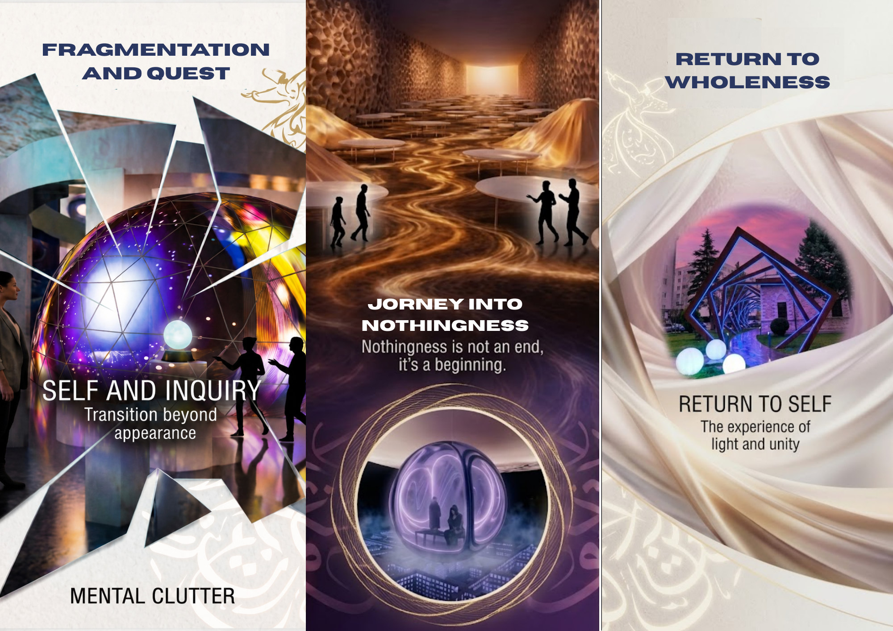
Inspect
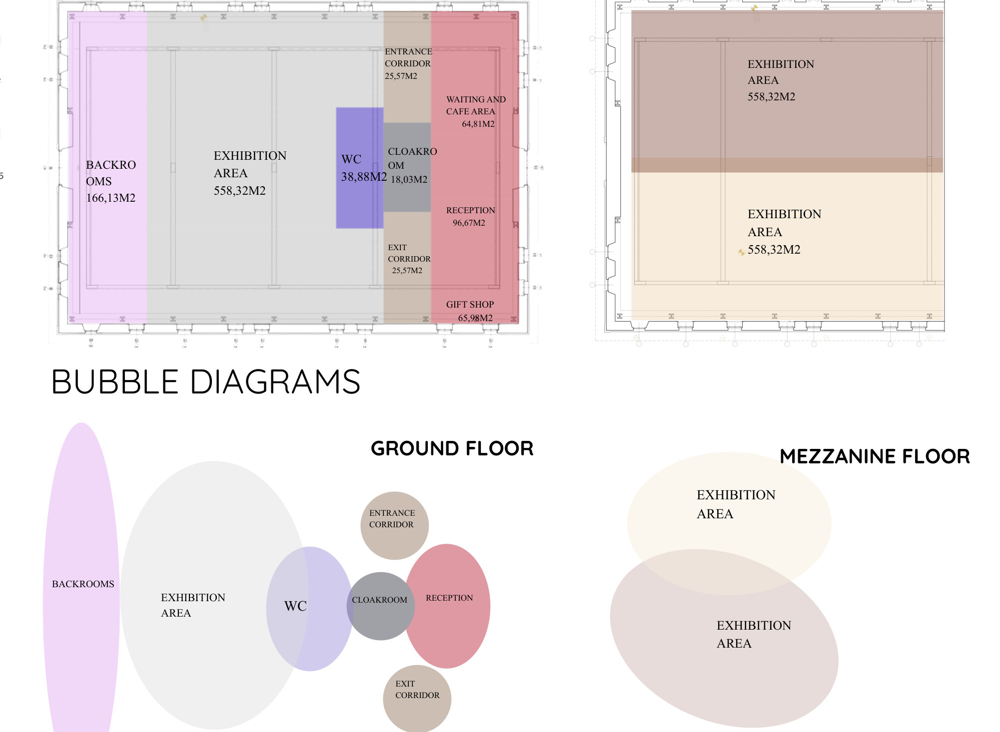
InspectPlans

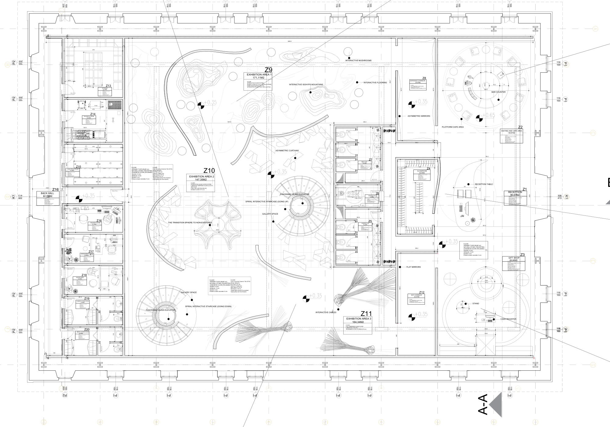
Inspect
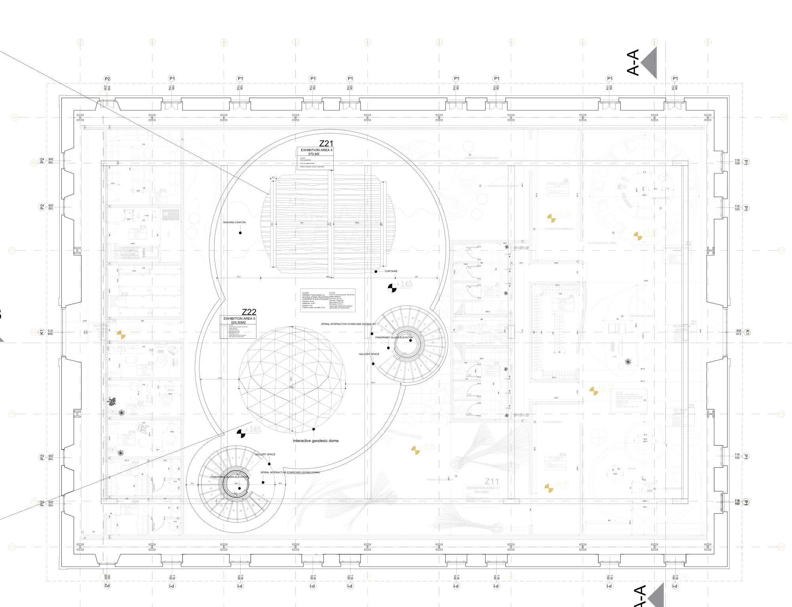
Inspect
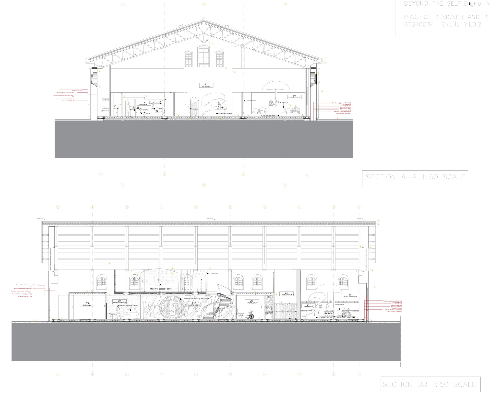
Inspect
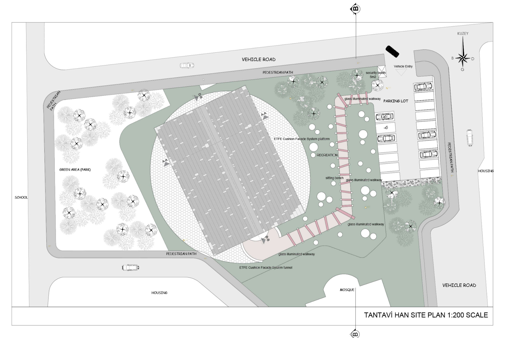
InspectSpaces
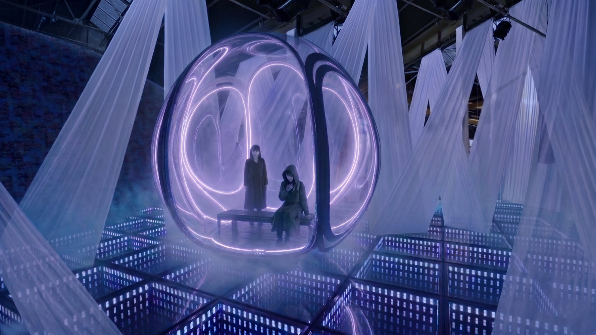


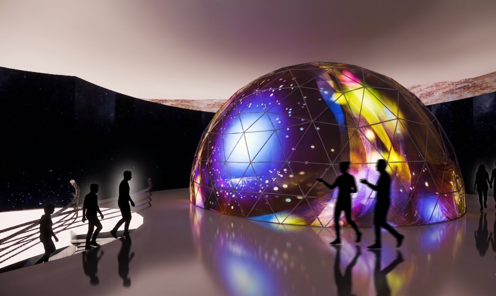
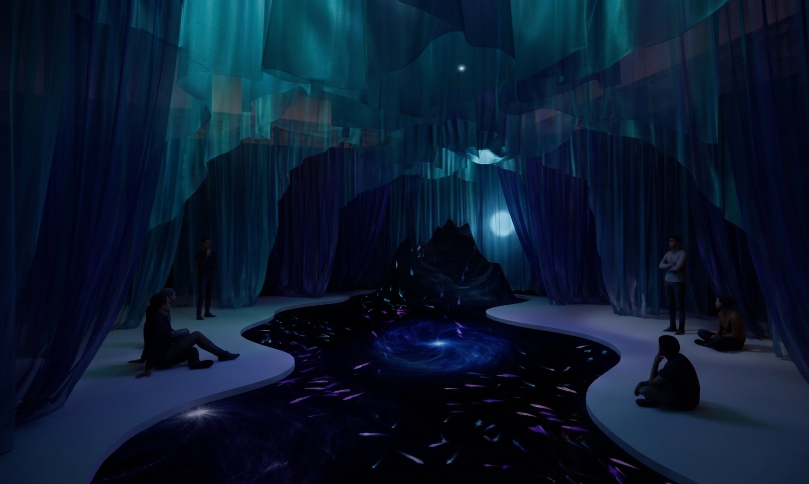
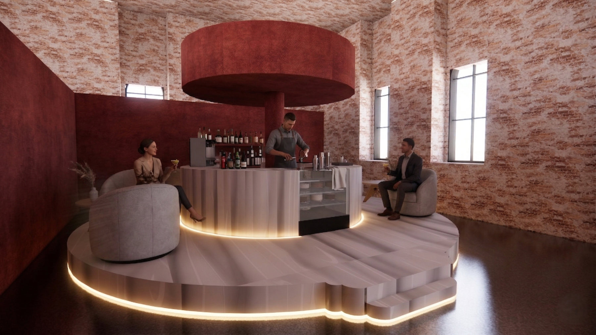
Details

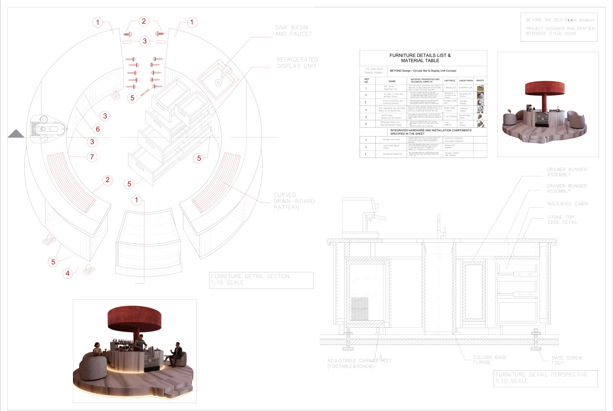
Inspect
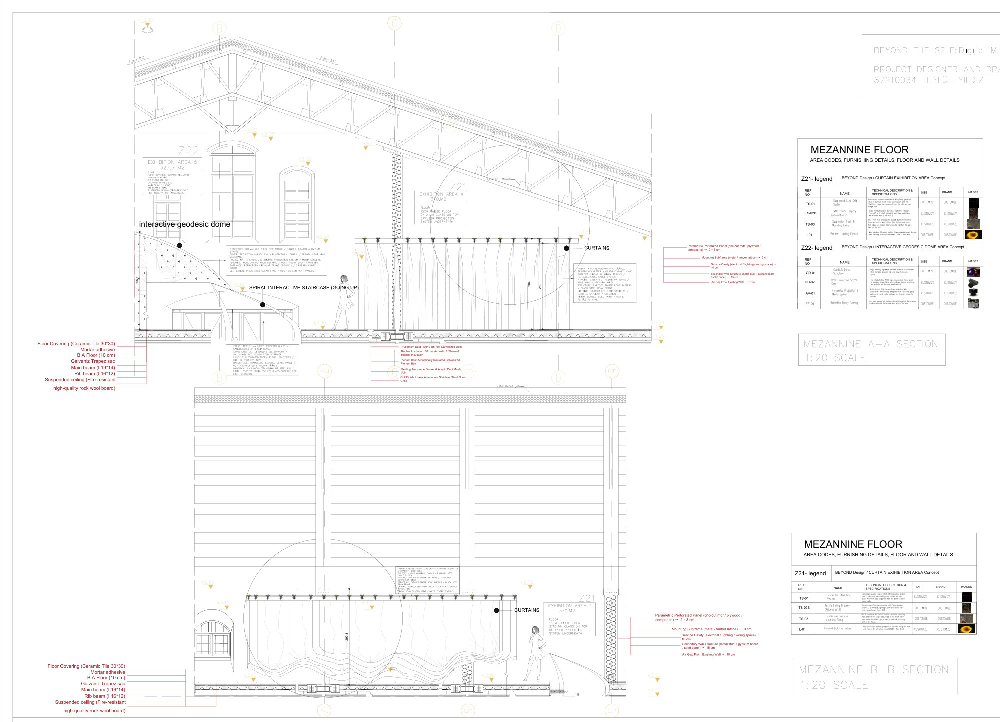
Inspect